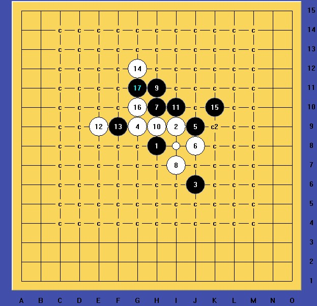
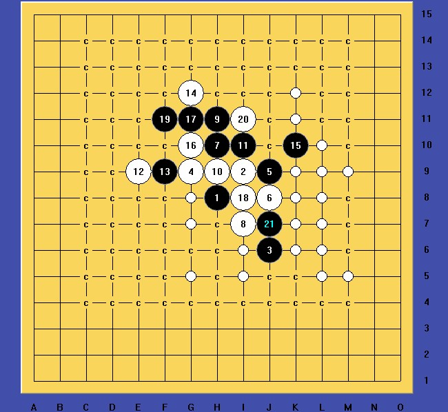

流星变化请教
#1 流星变化请教 作者：知布 发表时间：2012-4-3 22:09:43
这个 14 怎么胜呢？
感觉有机会，但试了几个 15 都攻不出来
#2 Re:流星变化请教 作者：没事摆石子玩 发表时间：2012-4-4 2:11:07
谁告诉你14黑能胜。。。#3 Re:流星变化请教 作者：知布 发表时间：2012-4-4 11:55:33
没人告诉我，只是差这路就地毯这个白８
#4 Re:流星变化请教 作者：山城刀客 发表时间：2012-4-4 13:47:24

这个15是必须的了。

如果有地毯，也只可能是这个21，难度不小。
#5 Re:流星变化请教 作者：没事摆石子玩 发表时间：2012-4-5 5:24:15
这个棋很难地毯 而且意义不大 白最强这路黑如果控制得当 应该可以取得一定优势